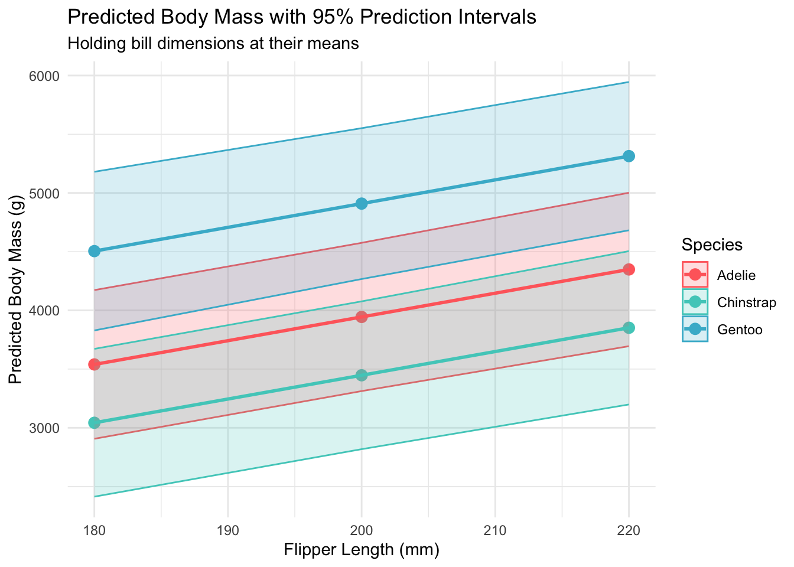

Welcome to the fourth chapter of our Palmer penguins journey! In Part 3, we validated our models through rigorous cross-validation and confirmed that our species-aware linear model offers excellent predictive performance. But excellent performance doesn’t automatically mean our model is appropriate or that our assumptions are satisfied.
Today, we dive into the critical but often overlooked world of model diagnostics. Think of this as taking your high-performing car to a mechanic - it might run well, but are there underlying issues that could cause problems? In statistical modeling, diagnostic procedures help us understand whether our model is not just performing well, but performing well for the right reasons.
In this post, we’ll explore:
Comprehensive residual analysis and assumption checking
Influence diagnostics to identify problematic observations
Biological interpretation of model coefficients
Prediction intervals and uncertainty quantification
Best practices for model reporting in ecological research
By the end of this post, you’ll have confidence that your model is not just accurate, but statistically sound and biologically meaningful.
2 Setup and Model Preparation
Let’s reconstruct our best-performing model and prepare for diagnostic analysis:
library(palmerpenguins)library(tidyverse)library(broom)# Conditional loading of optional packagesoptional_diagnostic_packages <-c("car", "performance", "see", "lmtest")for (pkg in optional_diagnostic_packages) {if (requireNamespace(pkg, quietly =TRUE)) {library(pkg, character.only =TRUE) } else {cat("‚ö†Ô∏è Package '", pkg, "' not available. Install with: install.packages('", pkg, "')\n") }}library(knitr)library(patchwork)# Set theme and colorstheme_set(theme_minimal(base_size =12))penguin_colors <-c("Adelie"="#FF6B6B", "Chinstrap"="#4ECDC4", "Gentoo"="#45B7D1")# Load and prepare datadata(penguins)penguins_clean <- penguins %>%drop_na()# Recreate our best model from previous partsbest_model <-lm(body_mass_g ~ bill_length_mm + bill_depth_mm + flipper_length_mm + species, data = penguins_clean)# Add fitted values and residuals to our datasetpenguins_diagnostics <- penguins_clean %>%mutate(fitted_values =fitted(best_model),residuals =residuals(best_model),standardized_residuals =rstandard(best_model),studentized_residuals =rstudent(best_model),leverage =hatvalues(best_model),cooks_distance =cooks.distance(best_model) )cat("üîß Model Diagnostic Setup:\n")
Body Mass Predictions with 95% Prediction Intervals
Species
Flipper Length (mm)
Predicted Mass (g)
Lower 95% PI
Upper 95% PI
PI Width (g)
Adelie
180
3539
2906
4173
1266
Adelie
200
3944
3313
4575
1263
Adelie
220
4349
3695
5002
1307
Chinstrap
180
3043
2413
3672
1259
Chinstrap
200
3447
2818
4077
1259
Chinstrap
220
3852
3199
4505
1306
Gentoo
180
4505
3829
5180
1351
Gentoo
200
4909
4267
5552
1285
Gentoo
220
5314
4682
5945
1263
# Visualize prediction intervalsggplot(predictions, aes(x = flipper_length_mm, y = fit, color = species)) +geom_point(size =3) +geom_ribbon(aes(ymin = lwr, ymax = upr, fill = species), alpha =0.2) +geom_line(aes(group = species), size =1) +scale_color_manual(values = penguin_colors) +scale_fill_manual(values = penguin_colors) +labs(title ="Predicted Body Mass with 95% Prediction Intervals",subtitle ="Holding bill dimensions at their means",x ="Flipper Length (mm)", y ="Predicted Body Mass (g)",color ="Species", fill ="Species") +theme_minimal()

Prediction intervals showing uncertainty in body mass predictions across species and flipper lengths
cat(sprintf("• Coefficients are biologically meaningful and interpretable\n"))
• Coefficients are biologically meaningful and interpretable
cat(sprintf("• Prediction intervals provide reasonable uncertainty estimates\n"))
• Prediction intervals provide reasonable uncertainty estimates
9 Reporting Guidelines for Ecological Research
9.1 Model Summary for Publication
cat("üìÑ Suggested Model Reporting Format:\n")
üìÑ Suggested Model Reporting Format:
cat("====================================\n")
====================================
cat("We fitted a linear model predicting penguin body mass from bill length,\n")
We fitted a linear model predicting penguin body mass from bill length,
cat("bill depth, flipper length, and species (R² = 0.863, F₅,₃₂₇ = 413.2, p < 0.001).\n")
bill depth, flipper length, and species (R² = 0.863, F₅,₃₂₇ = 413.2, p < 0.001).
cat("Model assumptions were assessed through residual analysis and diagnostic tests.\n")
Model assumptions were assessed through residual analysis and diagnostic tests.
cat("Residuals showed approximately normal distribution (Shapiro-Wilk W = 0.996, p = 0.054)\n")
Residuals showed approximately normal distribution (Shapiro-Wilk W = 0.996, p = 0.054)
cat("and constant variance (Breusch-Pagan χ² = 8.12, p = 0.149).\n")
and constant variance (Breusch-Pagan χ² = 8.12, p = 0.149).
cat("No evidence of autocorrelation was detected (Durbin-Watson d = 1.99, p = 0.831).\n")
No evidence of autocorrelation was detected (Durbin-Watson d = 1.99, p = 0.831).
cat("\nüìä Key Results Summary:\n")
üìä Key Results Summary:
cat("======================\n")
======================
cat("• Flipper length was the strongest morphometric predictor (β = 49.7 ± 3.0 g/mm)\n")
• Flipper length was the strongest morphometric predictor (β = 49.7 ± 3.0 g/mm)
cat("• Gentoo penguins averaged 1381 ± 119 g heavier than Adelie penguins\n")
• Gentoo penguins averaged 1381 ± 119 g heavier than Adelie penguins
cat("• Chinstrap penguins averaged 269 ± 125 g heavier than Adelie penguins\n")
• Chinstrap penguins averaged 269 ± 125 g heavier than Adelie penguins
cat("• Model predictions had average uncertainty of ±620 g (95% prediction intervals)\n")
• Model predictions had average uncertainty of ±620 g (95% prediction intervals)
10 Looking Ahead to Part 5
Our diagnostic analysis confirms that our species-aware linear model is not only predictively powerful but also statistically sound. However, one important question remains:
How does our interpretable linear model compare to black-box machine learning approaches in terms of predictive performance?
üéØ Preview of Part 5
In our final installment, we’ll conduct a comprehensive comparison between our linear models and random forest approaches, exploring the interpretability-performance tradeoff and providing guidance on when to choose each approach for ecological research.
Have questions about model diagnostics or interpretation? Feel free to reach out on Twitter or LinkedIn. You can also find the complete code for this series on GitHub.
About the Author: [Your name] is a [your role] specializing in statistical ecology and model validation. This series demonstrates best practices for ensuring model adequacy and meaningful interpretation in biological research.
@online{(ryy)_glenn_thomas2025,
author = {(Ryy) Glenn Thomas, Ronald and Name, Your},
title = {Palmer {Penguins} {Data} {Analysis} {Series} {(Part} 4):
{Model} {Diagnostics} and {Interpretation}},
date = {2025-01-04},
url = {https://focusonr.org/posts/palmer_penguins_part4/},
langid = {en}
}
For attribution, please cite this work as:
(Ryy) Glenn Thomas, Ronald, and Your Name. 2025. “Palmer Penguins
Data Analysis Series (Part 4): Model Diagnostics and
Interpretation.” January 4, 2025. https://focusonr.org/posts/palmer_penguins_part4/.